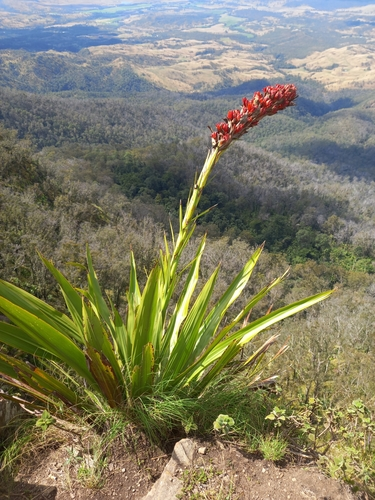

Doryanthaceae
Spear Lily Family / Gymea Lily Family
Doryanthaceae is a monogeneric family containing only two species of giant, perennial rosette herbs (Doryanthes) endemic to eastern Australia. These spectacular monocots are characterized by massive basal rosettes of sword-like leaves and enormous flowering scapes bearing large clusters of bright red flowers. The family belongs to the order Asparagales.
Overview
The Doryanthaceae family includes just the genus Doryanthes with two species, D. excelsa (Gymea Lily) and D. palmeri (Giant Spear Lily), both native to coastal regions of New South Wales and Queensland in eastern Australia. They typically grow in sclerophyll forests, woodlands, and heathlands, often on sandstone-derived soils.
These plants are remarkable for their sheer size. They form huge basal rosettes of numerous long, fibrous, sword-shaped leaves. After many years of vegetative growth, they produce a massive, thick flowering stalk (scape) that can reach several meters in height. This scape terminates in a large, dense cluster of numerous, large, bright red, 6-parted flowers. The plants may be monocarpic (flowering once then dying) or polycarpic (flowering multiple times). Phylogenetically, Doryanthaceae represents a distinct lineage within the large monocot order Asparagales.
Their dramatic appearance makes them iconic elements of the Australian landscape and they are sometimes cultivated as architectural plants in large gardens or botanical collections.
Quick Facts
- Scientific Name: Doryanthaceae R.Dahlgren & Clifford
- Common Name: Spear Lily Family, Gymea Lily Family
- Number of Genera: 1 (Doryanthes)
- Number of Species: 2
- Distribution: Endemic to Eastern Australia (NSW, QLD).
- Evolutionary Group: Angiosperms - Monocots - Asparagales
- Habit: Giant perennial rosette herbs.
Key Characteristics
Growth Form and Habit
Plants are very large, long-lived perennial herbs forming massive basal rosettes. They grow from a thick subterranean rhizome or short stem and are essentially acaulescent (stemless) except for the massive flowering scape.
Leaves
Leaves are numerous (often 100+ per rosette), arranged spirally in a dense basal cluster. They are simple, very long (up to 2.5 meters or more), linear or sword-shaped, stiff, and highly fibrous. Margins are entire but often become frayed or split at the tips with age. Venation is parallel. Leaves lack stipules.
Inflorescence
The inflorescence is a massive, erect, terminal scape (flowering stalk) that can reach 2-6 meters in height. The scape bears a large, dense, terminal, head-like or panicle-like cyme consisting of numerous flowers subtended by large, often reddish bracts.
Flowers
Flowers are large, showy, usually bisexual, and radially symmetrical (actinomorphic) or slightly bilaterally symmetrical. They are typically 3-merous (parts in threes), characteristic of monocots.
- Perianth: Consists of 6 large, fleshy, petaloid tepals arranged in two whorls of 3. The tepals are typically bright red or reddish-orange and are fused at the base to form a short tube.
- Androecium: Contains 6 stamens in two whorls of 3, attached to the perianth tube (epitepalous). Filaments are long and reddish; anthers are large, basifixed (attached at the base), and open via longitudinal slits.
- Gynoecium: Features an inferior ovary (usually; sometimes described as half-inferior), composed of 3 fused carpels forming 3 locules (chambers). A single, thick, columnar style arises from the ovary, topped by a 3-lobed or capitate stigma. Ovules are numerous in each locule, attached to axile placentas. Nectar is produced from septal nectaries within the ovary walls.
Fruits and Seeds
The fruit is a large (several cm long), woody or leathery, loculicidal capsule, typically ovoid or oblong and 3-angled, opening by 3 valves to release numerous seeds. Seeds are flattened, black, and often possess a wing-like margin. They contain endosperm.
Chemical Characteristics
Plants contain steroidal saponins.
Field Identification
Identifying Doryanthaceae is straightforward due to their gigantic size and unique features within their restricted Australian range:
Primary Identification Features
- Giant rosette habit: Massive basal cluster of leaves.
- Huge, sword-like leaves: Very long (meters), linear, fibrous leaves forming the rosette.
- Massive flowering scape: Extremely tall (several meters) stalk arising from the rosette center (when flowering).
- Large cluster of large, red flowers: Numerous, showy, 6-tepaled red flowers borne at the top of the scape.
- Inferior ovary / Large woody capsule: Ovary below tepal attachment; fruit a large, 3-parted woody capsule.
- Eastern Australian distribution: Endemic to coastal NSW and QLD.
Secondary Identification Features
- Habitat: Sclerophyll forest, woodland, or heathland, often on sandstone.
- Fibrous leaves, often frayed at tips.
Seasonal Identification Tips
The rosette is visible year-round, but flowering is infrequent:
- Year-round: The massive leaf rosette is always present and identifiable.
- Flowering Season (Infrequent, often spring/summer): The enormous scape with its cluster of red flowers is unmistakable but may only occur after many years or specific triggers (like fire).
- Fruiting Season: Large, woody capsules develop on the scape after flowering and may persist for some time.
Common Confusion Points
Distinguishing Doryanthaceae from other large Australian monocots:
- Xanthorrhoeaceae (Xanthorrhoea - Grass Trees): Also large rosette plants with tall scapes, but leaves are much narrower (often quadrangular in cross-section), the scape is a dense spike of tiny cream/white flowers (not a head of large red flowers), and the ovary is superior. Belong to Asphodelaceae within Asparagales.
- Agavaceae (now Asparagaceae subfamily Agavoideae - e.g., Agave, Furcraea): Large rosette plants, some introduced to Australia, also produce tall scapes, but flowers are typically yellowish or greenish, structurally different (often tubular), and ovary position/fruit type differ. Not native.
- Focus on the combination: Giant Rosette + Huge Sword Leaves + Massive Scape + Large Head/Cluster of Large Red 6-Tepaled Flowers + Inferior Ovary + E Australia = Doryanthaceae.
Field Guide Quick Reference
Look For:
- Giant rosette herb (E Australia)
- Leaves: Basal, Simple, Sword-like, very long, fibrous
- Inflorescence: Massive terminal scape
- Flower Cluster: Large, dense head/cyme
- Flowers: Large, Red, 6 tepals
- Stamens: 6
- Ovary: Inferior (usually), 3-carpellate
- Fruit: Large woody Capsule (3-valved)
Key Variations:
- Inflorescence shape slightly different between the two species
- Leaf width/length differs slightly
Notable Examples
The family contains only two species in the single genus Doryanthes:

Doryanthes excelsa
Gymea Lily / Giant Lily
Native to coastal areas near Sydney, NSW. Characterized by a relatively compact, dense, head-like flower cluster atop a tall scape. Leaves up to 2.5m long. An iconic plant of the Sydney sandstone flora.

Doryanthes palmeri
Giant Spear Lily
Native to SE Queensland and NE New South Wales. Differs from D. excelsa in having a longer, more open, panicle-like flower cluster (up to 1m long) on the scape, and typically longer leaves (up to 3m or more).
Phylogeny and Classification
Doryanthaceae is classified within the large and diverse monocot order Asparagales. This order includes many familiar families like orchids, irises, onions, asparagus, agaves, and aloes.
Within Asparagales, Doryanthaceae represents a distinct and somewhat isolated lineage. Its exact sister group relationship is not definitively resolved but molecular studies place it clearly within the order, separate from other large rosette-forming families like Asparagaceae (subfamily Agavoideae) or Asphodelaceae (subfamily Xanthorrhoeoideae). It is considered an early diverging lineage relative to some of the major Asparagales clades. Its unique morphology and restricted Australian distribution make it an important family for understanding the diversification of this major monocot order.
Position in Plant Phylogeny
- Kingdom: Plantae
- Clade: Angiosperms (Flowering plants)
- Clade: Monocots
- Order: Asparagales
- Family: Doryanthaceae
Evolutionary Significance
Doryanthaceae, while small, is evolutionarily significant:
- Isolated Lineage: Represents a distinct evolutionary branch within the diverse Asparagales, helping to understand the relationships within this major monocot order.
- Australian Endemism: Contributes to the unique flora of Australia, likely representing an ancient lineage adapted to Australian conditions.
- Gigantism and Life History: Its massive size and potentially monocarpic life history (in some conditions) offer insights into plant life history strategies and adaptation to specific environments (e.g., fire cycles).
- Morphological Uniqueness: The combination of giant rosette habit, massive scape, and large red flowers with an inferior ovary is unique among monocots.